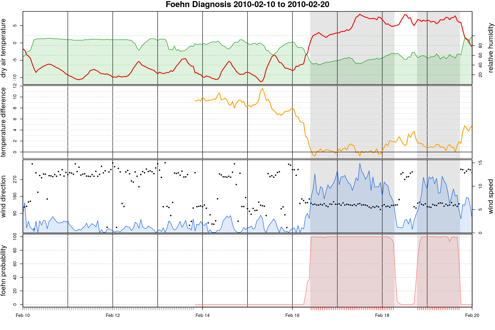
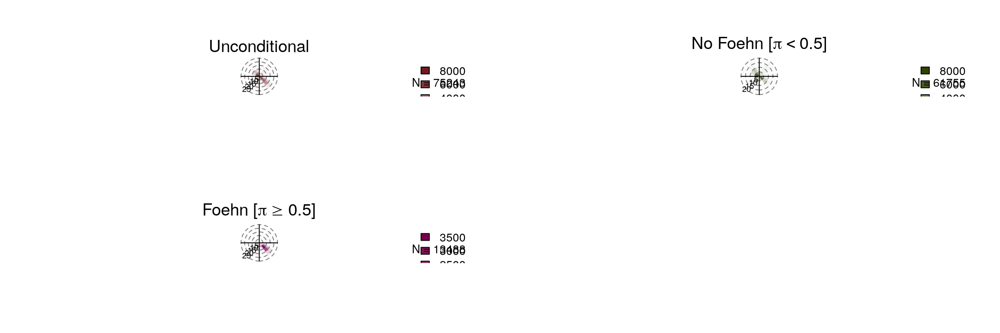

Toolbox for Automated Foehn Classification based on Mixture Models
The foehnix package provides a toolbox for automated probabilistic foehn wind classification based on two-component mixture models (foehn mixture models). This method has first been proposed by Plavcan et al. (2015) and compared to another semi-automatic classification, foehn experts, students, and weather enthusiasts in the “Community Foehn Classification Experiment” (Mayr 2019).
Foehn mixture models are a special case of the general flexible mixture model class (Fraley 2002, Leisch 2004, Grün 2007, Grün 2008), an unsupervised statistical model to identify unobserveable clusters or components in data sets. foehnix allows to estimate two-component mixture models with additional concomitants.
Some of the features:
- Gaussian or logistic components with optional censoring or truncation.
- Concomitant variables for the probability model.
- Model assessment based on graphical output and information criteria.
- Automatic handling of missing values in the data set.


References
Mayr GJ, Plavcan D, Laurence A, Elvidge A, Grisogono B, Horvath K, Jackson P, Neururer A, Seibert P, Steenburgh JW, Stiperski I, Sturman A, Večenaj Ž, Vergeiner J, Vosper S, Zängl G (2018). The Community Foehn Classification Experiment. Bulletin of the American Meteorological Society, 99(11), 2229—2235, 10.1175/BAMS-D-17-0200.1
Plavcan D, Mayr GJ, Zeileis A (2014). Automatic and Probabilistic Foehn Diagnosis with a Statistical Mixture Model. Journal of Applied Meteorology and Climatology, 53(3), 652—659, 10.1175/JAMC-D-13-0267.1
Hastie T, Tibshirani R, Friedman J (2009). Fitting Logistic Regression Models. In The Elements of Statistical Learning (Chapter 4.4.1), 2_nd_ edition, ISBN 978-0387848570. PDF download
Grün B, Friedrich L (2008). FlexMix Version 2: Finite Mixtures with Concomitant Variables and Varying and Constant Parameters. Journal of Statistical Software, Articles, 28(4), 1—35, doi:10.18637/jss.v028.i04
Gr"un B, Leisch F (2007). Fitting Finite Mixtures of Generalized Linear Regressions in R. Computational Statistics & Data Analysis, 51(11), doi:10.1016/j.csda.2006.08.014
Friedrich L (2004). FlexMix: A General Framework for Finite Mixture Models and Latent Class Regression in R. Journal of Statistical Software, Articles, 11(8), 1—18, doi:10.18637/jss.v011.i08
Fraley C, Raftery AE (2000). Model-Based Clustering, Discriminant Analysis, and Density Estimation. Journal of the American Statistical Association, 97(458), 611—631, doi:10.1198/016214502760047131
McCullagh P, Nelder JA (1999). Likelihood functions for binary data. In Generalized Linear Models (Chapter 4.4), 2_nd_ edition, ISBN 0-412-31760-5.